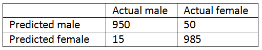
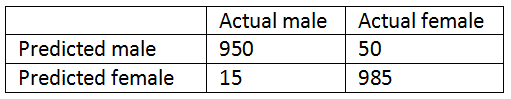

Assignment


Q1
The function used to convert the categorical variables to dummy/indicator variables is
Answer
b
Q2
What is/are the possible advantage(s) of selecting a subset of input variables for model building
Answer
d
Q3
Which of the following functions can be used to split the data into train and test?
Answer
c
Q4
What is “k” in the k-Nearest Neighbors algorithm?
Answer
b
Q5
The function used to perform k-Nearest Neighbors classification is: -
Answer
c

Q6
What is heteroscedasticity as used to assess a Linear Regression model?
Answer
a
Q7
A Linear Regression model is said to be good when the R-squared value tends to
Answer
b
Q8
Consider the following confusion matrix and calculate the number of participants that have been wrongly classified as female?


Answer
a
Q9
Which of the following metric can be used to compare different Logistic Regression models?
Answer
d
Q10
Which of the following method gives the best fit for Logistic Regression model?
Answer
d
Q11
The Gini coefficient ranges from
Answer
a
Q12
Use the dataset named “People Charm case.csv” that deals with HR analytics and answer the following questions from 12 to 20
Which of the following variables have missing values?
Which of the following variables have missing values?
Answer
d
Q13
What is the third quartile value for the variable “lastEvaluvation”
Answer
b
Q14
Construct a crosstable for the variables ‘dept’ and “salary” and find out which department has highest frequency value in the category low salary
Answer
c
Q15
Generate a boxplot for the variable “numberOfProjects” and get the median value for the number of projects where the employees have worked on
Answer
b
Q16
Build a Logistic Regression model using all the variables. Use 75% of the data as the training set and fix the random state as 2. The accuracy score for the predicted model is
Answer
a
Q17
Build a Logistic Regression model using all the variables. Use 75% of the data as the training set and fix the random state as 2 and find out how many samples are misclassified
Answer
d
Q18
Plot a histogram using the variable “avgMonthlyHours” and find the range in which the number of employees worked for 150 hours per month
Answer
c
Q19
Build a k-Nearest Neighbors model using all the variables. Use 75% of the data as the training set, fix the random state as 0 and the k value as 2.The accuracy score for the predicted model is
Answer
a
Q20
Generate a boxplot for the variables “lastEvaluation” and “numberOfProjects” and choose which one of the following statements is incorrect
Answer
c